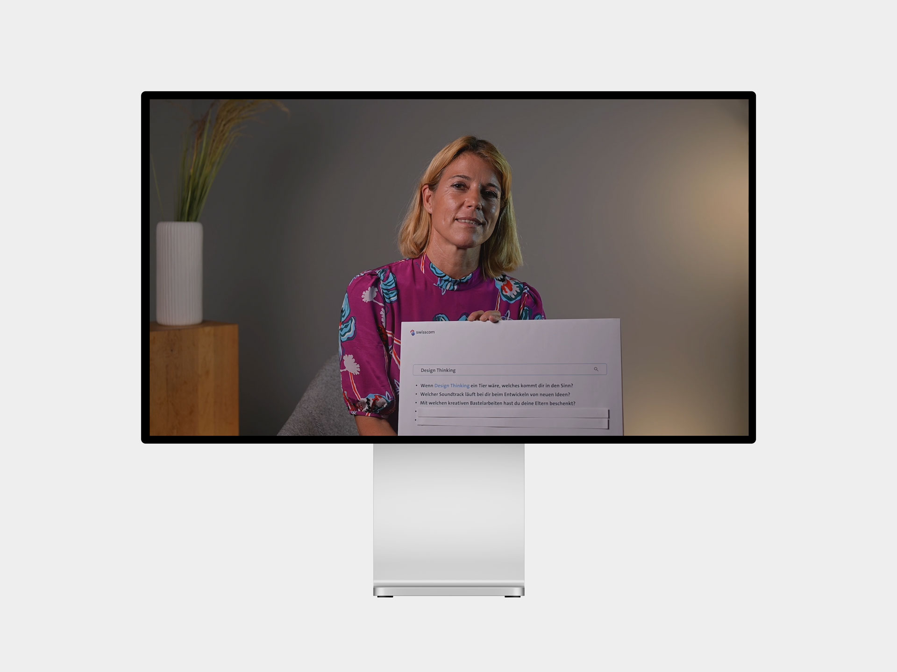
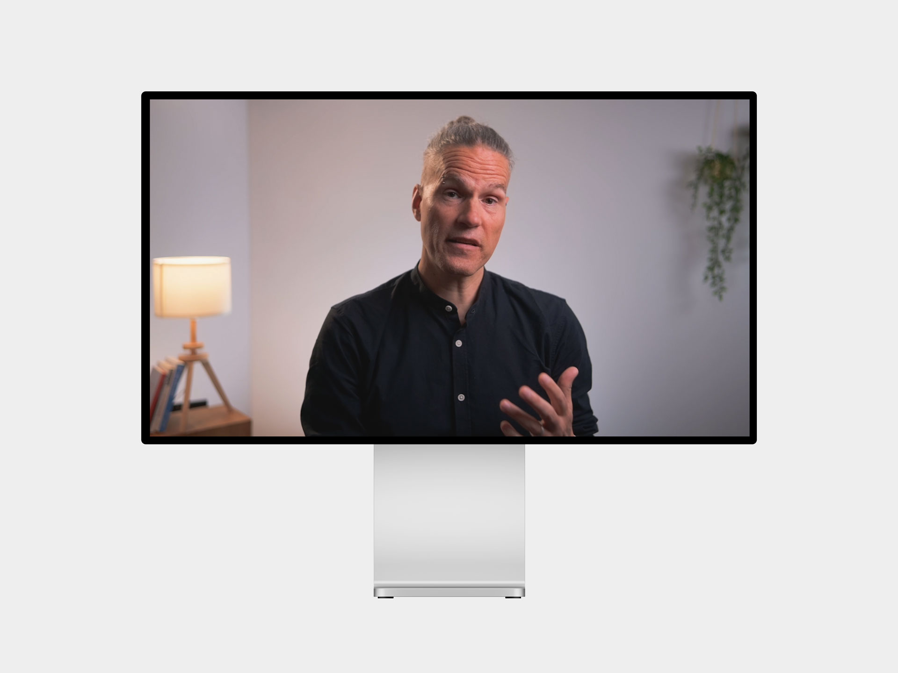
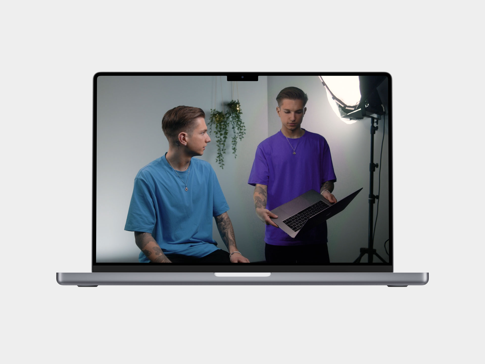
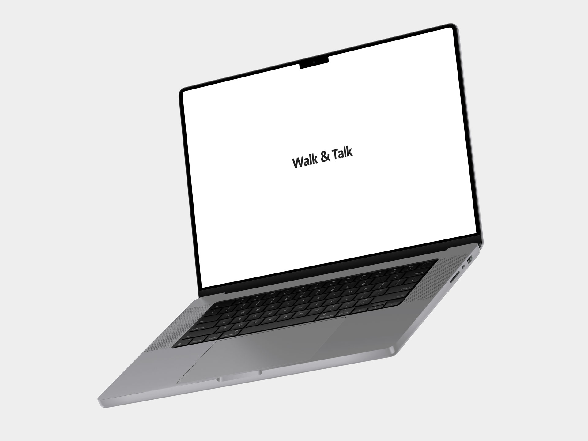
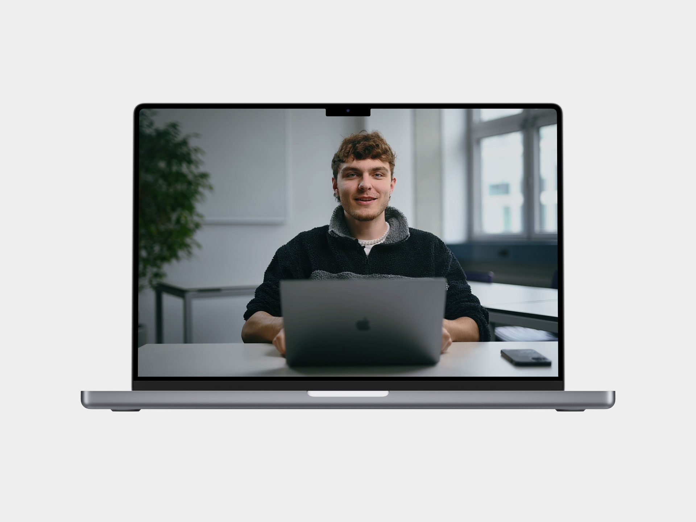

Hallo, ich bin Liam, Mediamatiker i. A.
Aktuell auf Projektsuche
Video | Interview
Mit Klementina haben wir zwei Videos über Design Thinking bei GHR erstellt. Ich habe bei diesem Auftrag die Leitung übernommen und diesen organisiert und durchgeführt.
Sharepoint ↗
Video | Statement
Mit Fabian Rohr haben wir ein Video erstellt, welches in einem Lernpfad für Führungskräfte der Swisscom eingebunden wurde.
Sharepoint ↗
Video | Animation
Für das Swisscom Brandcenter haben wir ein Video über das Thema Farben erstellt. Ich war bei der Produktion für den Ton zuständig und habe die Illustrationen vorbereitet.
Sharepoint ↗
Video | Interview
Ich habe bei diversen Folgen der Serie Walk and Talk von Swisscom mitgearbeitet. Hier siehst du alle Folgen, bei denen ich beteiligt war.
Artikel Oleg ↗Artikel Carola ↗
Artikel Marianne ↗

Video | Animation
Um Motion vorzustellen, haben wir über unser Team ein kurzes Video erstellt. Ich habe dafür eine und Animation erstellt und bei der Post Produktion unterstützt.
Artikel ↗
Über
Aktuell arbeite ich bei Motion als Multimediaproducer und erstelle Videos, Animationen und Illustrationen für diverse Auftraggeber. Bei diesen Aufträgen lerne ich viel Neues. Ich schätze es, dass ich von Anfang bis Ende an einem Auftrag mitarbeiten darf. In meiner Freizeit mache ich gerne Sport, räume mein Notion-Notizbuch auf oder kühle mich in der Aare ab.
Erfahrung
Ich kenne mich mit der Creative Cloud von Adobe aus und benutze
Programmen wie Premiere Pro, Lightroom oder Illustrator in meinem
Arbeitsalltag. Durch diverse Aufträge durfte ich auch mein Wissen in
After Effects vertiefen und mit dem Plugin Duik Angela bereits GIFs
erstellen.
Als Schwerpunktthema bei Motion fokussiere ich mich auf
Farben (Color correction / Color grading). In den nächsten 6 Monaten
vertiefe ich mein Wissen in diesem Bereich.
Jetzt
Offen für Projekte AKTUELL
Ich bin aktuell auf der Suche nach einem Projekt ab dem 1.2.2024. Schreibe mir gerne, falls du ein Projekt anbietest.
Als Fachexperte bei Motion übernehme ich die Führungsrolle bei
verschiedenen Aufträgen. Ich gebe mein Wissen an neue Lernende
weiter und gestalte Motion aktiv mit.
Falls ich dein
Interesse wecken konnte, du ein Projekt oder Fragen hast, freue ich
mich über eine E-Mail an
hallo@liamschenk.ch.